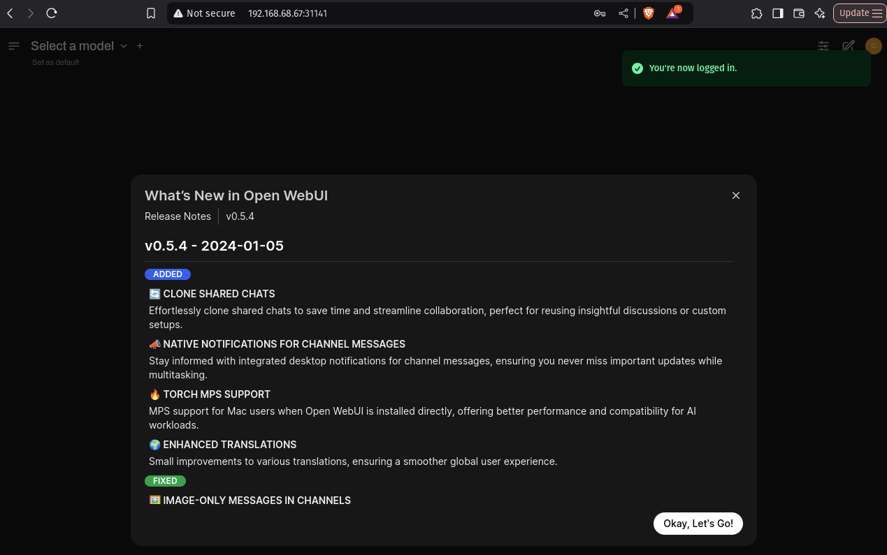

LLM Pools: deploy and orchestrate Large Language Models
⭐⭐⭐ Kalavai and our LLM pools are open source, and therefore free to use in both commercial and non-commercial purposes. If you find it useful, consider supporting us by staring our GitHub project, joining our discord channel, follow our Substack and give us a review on Product Hunt.
Beta feature: we are trialing shared pools. If you encounter any issues, please submit a ticket in our GitHub repo.
LLM pools in Kalavai are an easy way to expand your computing power beyond a single machine, with zero-devops knowledge. Kalavai aggregates the GPUs, CPUs and RAM memory from any compatible machine and makes it ready for LLM workflows. All you need is three steps to get your supercomputing cluster going:
- Start a pool with the kalavai client
- Use the joining token to connect other machines to the pool
- Deploy LLMs with ready-made templates!
In this guide, we'll show how to join our first public LLM pool, ideal for AI developers that want to go beyond the hardware they have access to. This will manage step 1, so you can jump ahead to step 2 and 3. If you are interested in hosting your own private shared pool, check out this one.
Pre-requisites
- Install the
kalavaiclient in a compatible computer. - Create a free account on our platform.
Join in
Authenticate your computer using the kalavai client:
$ kalavai login
Kalavai account details. If you don't have an account, create one at https://platform.kalavai.net
User email: <your.account@email.com>
Password:
[10:56:05] <your.account@email.com> logged in successfully
Get the joining token from our platform, under Community Pools page. Find the Public-LLMs pool and click JOIN to reveal the joining token. Copy and paste the command on your computer:
kalavai pool join <TOKEN>
That's it! Not only you are sharing your computing time with the community, but now you can tap into a large pool of resources (GPUs, CPUs, RAM...), and any LLM deployed on them.
What can you do in the pool?
Public shared pools are both public (anyone can join in) and shared (raw resources and deployments are accessible by all). This means any user that is part of the pool can check out the models already present in it, run inference on them, an deploy new ones with the resources available.
A. Use existing models
All users can interact with models within the pool in two ways:
- Single API endpoint for HTTP requests
- Unified ChatGPT-like UI playground
UI Playground
The pool comes with an OpenWebUI deployment to make it easy to test model inference with LLMs via the browser. To check the endpoint, use the kalavai client to locate the playground deployment:
$ kalavai job list
┏━━━━━━━━━┳━━━━━━━━━━━━┳━━━━━━━━━━┳━━━━━━━━━━━━━━━━━━━━━━━━━━━━━━━━━━━━━━━━━━┓
┃ Owner ┃ Deployment ┃ Workers ┃ Endpoint ┃
┡━━━━━━━━━╇━━━━━━━━━━━━╇━━━━━━━━━━╇━━━━━━━━━━━━━━━━━━━━━━━━━━━━━━━━━━━━━━━━━━┩
│ default │ playground │ Ready: 1 │ http://100.10.0.5:31912 (mapped to 8080) │
└─────────┴────────────┴──────────┴──────────────────────────────────────────┘
Within the UI you can select the model you wish to test and have a chat.

Note: the playground is a shared instance to help users test models without code and should not be used in production. You need to create a playground account to access it. This can be different to your Kalavai account details. The creation of a new user is necessary to keep things like user chat history and preferences.
Single API endpoint
All interactions to models in the pool are brokered by a LiteLLM endpoint that is installed in the system. To interact with it you need a LITELLM_URL and a LITELLM_KEY.
The LITELLM_URL can be found using the kalavai client, as the endpoint of the litellm-1 deployment:
$ kalavai job list
┏━━━━━━━━━┳━━━━━━━━━━━━┳━━━━━━━━━━┳━━━━━━━━━━━━━━━━━━━━━━━━━━━━━━━━━━━━━━━━━━┓
┃ Owner ┃ Deployment ┃ Workers ┃ Endpoint ┃
┡━━━━━━━━━╇━━━━━━━━━━━━╇━━━━━━━━━━╇━━━━━━━━━━━━━━━━━━━━━━━━━━━━━━━━━━━━━━━━━━┩
│ default │ litellm │ Ready: 3 │ http://100.10.0.5:30916 (mapped to 4000) │
└─────────┴────────────┴──────────┴──────────────────────────────────────────┘
The LITELLM_KEY is shown on the Community Pool page of our platform.
In this example:
LITELLM_URL=http://100.10.0.5:30916LITELLM_KEY=sk-qoQC5lijoaBwXoyi_YP1xA
Check available LLMs
Using cURL:
curl -X GET "<LITELLM_URL>/v1/models" \
-H 'Authorization: Bearer <LITELLM_KEY>' \
-H "accept: application/json" \
-H "Content-Type: application/json"
Using python:
import requests
LITELLM_URL = "http://100.10.0.5:30916"
LITELLM_KEY = "sk-qoQC5lijoaBwXoyi_YP1xA"
def list_models():
response = requests.get(
f"{LITELLM_URL}/v1/models",
headers={"Authorization": f"Bearer {LITELLM_KEY}"}
)
return response.json()
if __name__ == "__main__":
print(
list_models()
)
Use models
Using cURL:
curl --location '<LITELLM_URL>/chat/completions' \
--header 'Authorization: Bearer <LITELLM_KEY>' \
--header 'Content-Type: application/json' \
--data '{
"model": "<MODEL_NAME>",
"messages": [
{
"role": "user",
"content": "what llm are you"
}
]
}'
Using python:
import requests
LITELLM_URL = "http://206.189.19.245:30916"
LITELLM_KEY = "sk-qoQC5lijoaBwXoyi_YP1xA"
def model_inference():
response = requests.post(
f"{LITELLM_URL}/chat/completions",
headers={"Authorization": f"Bearer {LITELLM_KEY}"},
json={
"model": "<MODEL_NAME>",
"messages": [
{
"role": "user",
"content": "what llm are you"
}]
}
)
return response.json()
if __name__ == "__main__":
print(
model_inference()
)
For more details on the endpoint(s) parameters, check out LiteLLM documentation and the Swagger API
B. Deploy new models
Kalavai makes deployment of new models easy with the use of templates (no-code recipes for model engines). At the moment we support the following engines:
Kalavai supports any of the models each of the engines does. For more information, check out vLLM, llama.cpp and Aphrodite Engine support lists.
We are constantly adding new templates, so if your favourite one is not yet available, request it in our issues page.
New vLLM model
Here we'll deploy an LLM across 2 machines using vLLM. Check our template documentation or our multi-node deployment guide for more details and parameters with vLLM. Deploying with llama.cpp is similar too.
You need the LiteLLM KEY of the pool. See here for details on how to get it.
Create a values.yaml file that will include the parameters to pass to the vLLM engine:
- name: litellm_key
value: "<LITELLM_KEY>"
default: ""
description: "Master key of the LiteLLM service (central registry)"
- name: workers
value: 2
default: 1
description: "Number of remote workers (for tensor and pipeline parallelism). This is in addition to the main node"
- name: model_id
value: Qwen/Qwen2.5-1.5B-Instruct
default: null
description: "Huggingface model id to load"
- name: pipeline_parallel_size
value: 2
default: 1
description: "Pipeline parallelism (use the number of nodes)"
Use the kalavai client to deploy your model. Choose option 0 to let kalavai select any available GPU device in the pool:
$ kalavai job run vllm --values values.yaml
Checking current GPU stock...
SELECT Target GPUs for the job (loading models)
0) Any/None
1) NVIDIA-NVIDIA GeForce RTX 2070 (8GB) (in use: False)
2) NVIDIA-NVIDIA GeForce RTX 3060 (12GB) (in use: False)
3) NVIDIA-NVIDIA GeForce RTX 3050 Ti Laptop GPU (4GB) (in use: False)
--> : 0
AVOID Target GPUs for the job (loading models)
0) Any/None
1) NVIDIA-NVIDIA GeForce RTX 2070 (8GB) (in use: False)
2) NVIDIA-NVIDIA GeForce RTX 3060 (12GB) (in use: False)
3) NVIDIA-NVIDIA GeForce RTX 3050 Ti Laptop GPU (4GB) (in use: False)
--> : 0
Template templates/vllm/template.yaml successfully deployed!
Check progress of your deployment:
$ kalavai job list
┏━━━━━━━━━┳━━━━━━━━━━━━━━━━━━━━━━━━━━━━┳━━━━━━━━━━━━┳━━━━━━━━━━━━━━━━━━━━━━━━━━━━━━━━━━━━━━━━━━┓
┃ Owner ┃ Deployment ┃ Workers ┃ Endpoint ┃
┡━━━━━━━━━╇━━━━━━━━━━━━━━━━━━━━━━━━━━━━╇━━━━━━━━━━━━╇━━━━━━━━━━━━━━━━━━━━━━━━━━━━━━━━━━━━━━━━━━┩
│ default │ litellm-1 │ Ready: 3 │ http://100.10.0.5:30916 (mapped to 4000) │
├─────────┼────────────────────────────┼────────────┼──────────────────────────────────────────┤
│ <user> │ qwen-qwen2-5-1-5b-instruct │ Ready: 1 │ │
│ │ │ Pending: 2 │ │
└─────────┴────────────────────────────┴────────────┴──────────────────────────────────────────┘
Your model will appear listed under your user (
kalavai job logs qwen-qwen2-5-1-5b-instruct
Note: models may take several minutes to be ready, particularly if the model weights are large. This is due to the time the system takes to 1) download the models from source and 2) distribute them to the memory of each device. This is an overhead that only happens once per deployment.
Once the model is loaded, you can interact with it as you would with any other model via the LiteLLM API.
What's next?
Enjoy your new supercomputer, check out our templates and examples for more model engines and keep us posted on what you achieve!
How many resources to request?
For this job example we don't need to tweak resource parameters (the model fits in a single worker), but for other models you may need to up the number of workers, desired RAM, etc. For more details on how to choose resources for jobs, check out this guide.
Delete deployment
You are welcome to leave the model running for others, but if you wish to remove your deployment, you can do so at any time with the kalavai client:
kalavai job delete <deployment name>
where the kalavai job list.
FAQs
Work in Progress!
Why is it free?
We thought the community may be interested in a public version, so we have created a public shared pool that anyone can join. It is truly public (anyone can join) and shared (resources are pooled together, and anyone can see and use each other's LLMs).
We are committed to advancing community computing, and that's why not only we are showing how anyone can create their own pool with their devices, but access to the public instance is free.